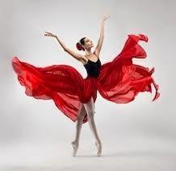

Welcome to my webpage.
 Ballerina-landBallerina-Land is inspired by two little girls whose faces light up at the mention of Ballerinas. They fully believe that tutus are everyday wear, go with every outfit and that dancing is AMAZING!
Ballerina Ballet originates from Italy in the 1500's. This was during the Renaissance Period when Europe had emerged from
the Middle Ages and started to explore new ways of thinking, new ideas in architecture and politics and overall great
social change. Historians say that the birthplace of the Renaissance came from the Italian city of Florence and the patriarchal
family of Florence, the Medici's, is credited with this emergence of change. This dynasty lasted several hundred years and were
patrons of Michelangelo, Leonardo da Vinci, Raphael, Galileo and more. They funded St. Peter's Basilica, Santa Maria del Fiore and
financed the invention of opera and the piano. When Catherine de Medici married King Henry II of France she brought with her her love of
the arts. When festivals were being held she made the directors feature more dance numbers (for they were her favorite) and this lead to
a new art form called ballet de cour. The first authentic ballet was titled Ballet Comique de la Reine and debuted in 1581.
In 1827 Romantic Ballet was born with La Sylphide, and was performed by Marie Taglioni and was choreographed by her father to feature her.
It was inspired by Romanticism and also introduced pointework into the ballet dancers repertoire. Since its inception, ballet has evolved into
what we know, and love, it to be.